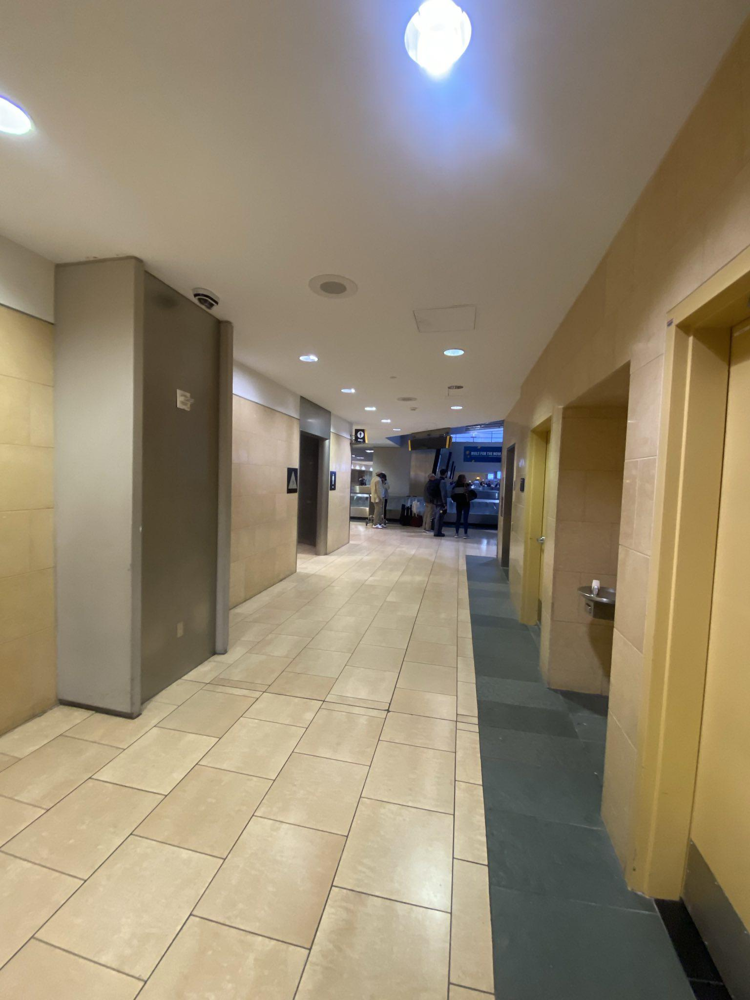
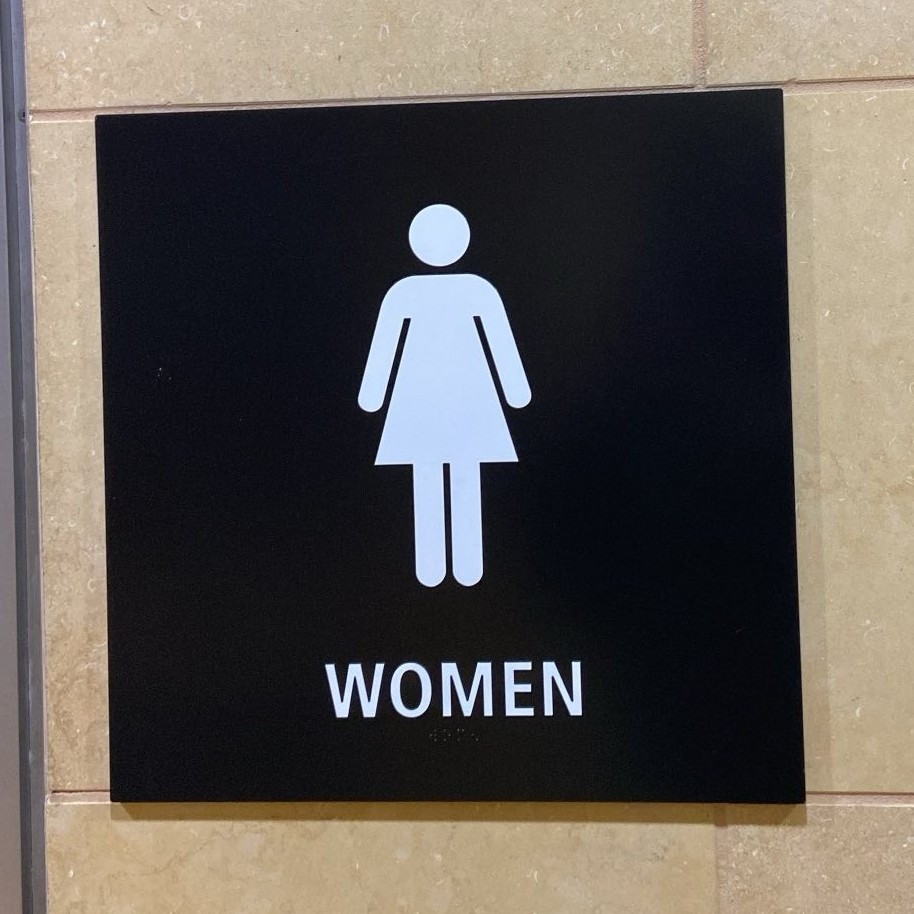
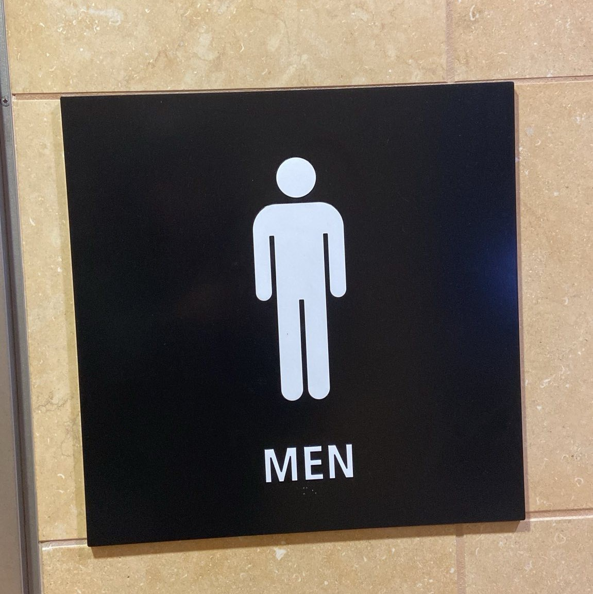

O primeiro andar é de retirada de bagagens/chegadas.
O segundo andar é TSA/Segurança e embarque. Ele é separado em duas seções e para ir de uma seção a outra, você deve
desça as escadas
sair no segundo andar
Recomendamos entrar no aeroporto pelo Terminal 2.
Se estiver de frente para o aeroporto:
Vá para a esquerda para chegar a: United, JetBlue, Delta
Vá para a direita para chegar a: Alaska, American
Desça as escadas e caminhe para a direita (cerca de 10 minutos) para chegar ao: terminal 1 (Frontier, Spirit, Southwest)
É melhor comprar uma passagem de avião online. Apenas algumas companhias aéreas permitem que você compre uma passagem no balcão, e geralmente há uma taxa. As bilheterias não aceitam dinheiro.
O wifi do aeroporto é mais forte no terminal 2, próximo à escada rolante. Vá até lá para obter melhor conexão com a Internet ao reservar passagens aéreas.
Clique para visualizar o mapa estático 1 do Aeroporto Internacional de San Diego
Clique para visualizar o mapa estático 2 do Aeroporto Internacional de San Diego
Voluntários
Os voluntários podem chegar ao aeroporto pela manhã (8h-11h) ou à noite (17h-22h). Eles caminharão por todo o aeroporto
Os voluntários terão comida e copos gratuitos, que você poderá encher com água em qualquer um dos bebedouros do aeroporto.
Os voluntários também poderão ter gratuitamente roupas, itens de higiene (escovas de dente, lenços umedecidos, produtos menstruais, fraldas), cobertores
Procure pessoas com carroça ou carroça, elas podem estar usando coletes azuis ou verdes
Os voluntários podem responder perguntas como: onde encontrar seu avião, como conseguir seu cartão de embarque/bilhete, quando seu voo é
Você vai passar a noite no aeroporto? Por favor nos informe. Podemos ter um lugar para você dormir durante a noite
Você se sente doente ou precisa de ajuda médica? Conte a um voluntário e ele tentará ajudá-lo
Seu voo foi cancelado e você foi ajudado por instituições de caridade católicas ou serviços familiares judaicos? Podemos conectar você com CC ou JFS
Banheiros
Os banheiros estão localizados em todo o aeroporto

Um corredor no aeroporto onde ficam os banheiros

Logotipo do banheiro feminino

Logotipo do banheiro masculino Logotipo do banheiro para um único ocupante. Esta casa de banho é adequada para pessoas com problemas de mobilidade, crianças pequenas ou pessoas que não se sintam à vontade com as casas de banho masculinas e femininas mais comuns.
Fontes de água muitas vezes podem ser encontradas próximas aos banheiros.
À esquerda desta foto há uma fonte de água. À direita desta foto está um banheiro para um único ocupante.
Não jogue lenços umedecidos no vaso sanitário
Tomadas elétricas
Existem pontos de venda em todo o aeroporto. Existem mais pontos de venda no primeiro andar
Você pode dormir nas cadeiras do primeiro andar
Lojas e restaurantes de aeroporto
A maioria das lojas e restaurantes fecha às 20h
Jack in the Box no Terminal 1 é o restaurante que fecha por último (20h)
O aeroporto não vende cigarros
Você pode comprar um cartão SIM na loja do Terminal 1 perto do Jack in the Box
Dinheiro
Não há câmbio de moeda no aeroporto
Não há Western Union no aeroporto. Você terá que pegar o ônibus para a estação Old Town para chegar a um Western Union.
Existem máquinas chamadas máquinas de “Cartão Pronto”. Eles trocarão seu dinheiro por um Mastercard de débito pré-pago por uma taxa de US$ 6
Há seis estações prontas no total e estão localizadas perto dos balcões de bilheteria. Depois de ter um Mastercard de débito pré-pago, você pode comprar sua passagem aérea nas bilheterias ou online.
Instruções para usar uma máquina Ready Station:
Encontre a estação e toque na tela para começar.
Uma mensagem informativa importante aparecerá na tela, clique em aceitar para continuar. Um máximo de $ 1.000 pode ser carregado no cartão de débito pré-pago.
Clique em “COMPRAR” para comprar um cartão de débito pré-pago e carregar dinheiro.
Insira a quantia desejada de dinheiro na máquina. Se você inserir US$ 100, o saldo do cartão será de US$ 94.
Depois de terminar de inserir o dinheiro, clique no botão "Concluído" na tela.
Confirme se o valor no cartão é o valor correto.
Caso o valor esteja correto, clique no botão “CONCLUÍDO - EMITIR CARTÃO”.
Se desejar adicionar mais dinheiro, clique no botão "ADICIONAR MAIS DINHEIRO".
A transação foi concluída. Pegue o cartão.
Existem caixas eletrônicos em ambos os terminais
Os balcões de passagens aéreas não aceitam dinheiro
Abrigo
Se você não tem passagens aéreas e precisa de um lugar para ficar, o abrigo mais próximo de San Diego é o
San Diego (Neil Good) Day Center,
na
299 17th Street.
O San Diego (Neil Good) Day Center está aberto de segunda a sexta, das 7h às 15h
As vagas são limitadas - tente chegar às 6h para garantir uma vaga.
O San Diego (Neil Good) Day Center possui banheiros, lavanderia e áreas para carregamento de celulares.
Como chegar ao San Diego (Neil Good) Day Center a partir do aeroporto